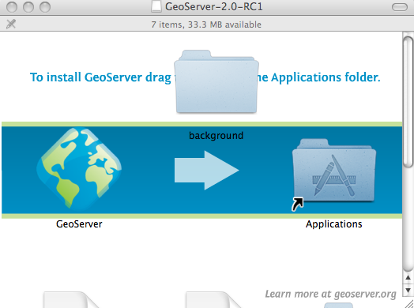
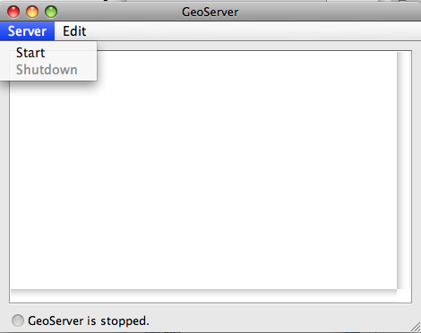

Mac OS X Installer¶
GeoServer Download 페이지에서 선호하는 GeoServer 버전 — 안정(Stable), 최신(Latest) 또는 일일(Nightly) — 을 클릭합니다.
다운로드 페이지에서 선호하는 GeoServer 버전의 Mac OS X Installer를 다운로드합니다.
.dmg 파일을 더블클릭하여 다운로드를 시작합니다.
GeoServer의 Mac OS X Installer 시작하기
GeoServer 아이콘을 Applications 폴더로 끌어다 놓습니다.
Applications 폴더로 들어가 GeoServer 아이콘을 더블클릭합니다.
주석
인터넷에서 다운받은 응용 프로그램이라는 내용의 GeoServer 관련 보안 경고를 수락해야 합니다.
GeoServer 콘솔 윈도우가 실행되면, Server‣Start로 이동하여 GeoServer를 실행합니다.
GeoServer 실행
콘솔 윈도우가 GeoServer 로딩 로그를 생성합니다. GeoServer가 완전히 시작되면 http://localhost:8080/geoserver 주소에서 브라우저가 실행됩니다. GeoServer에 오신 것을 환영합니다!
이전: Mac OS X
다음: Mac OS X Binary